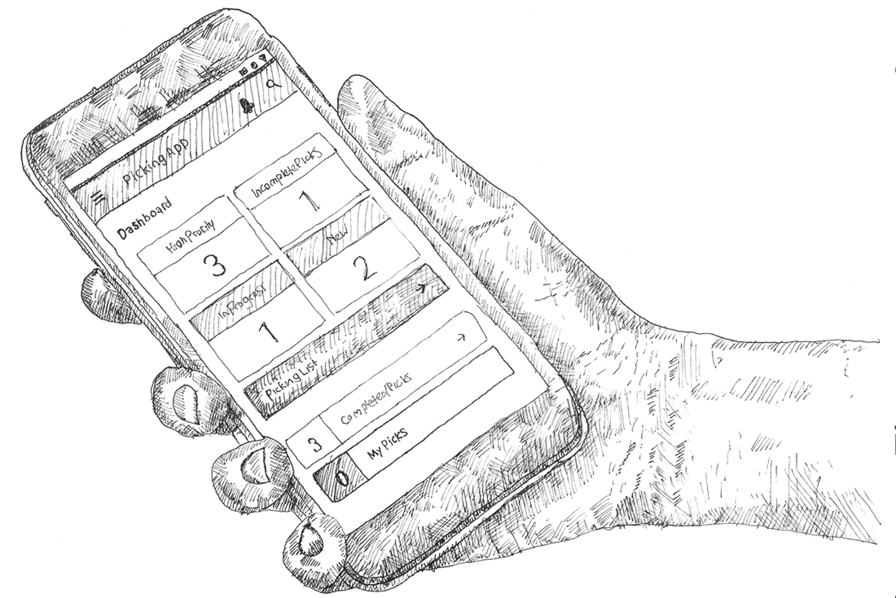
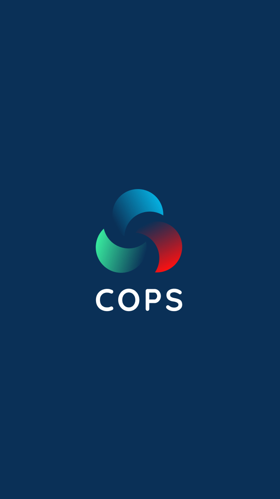
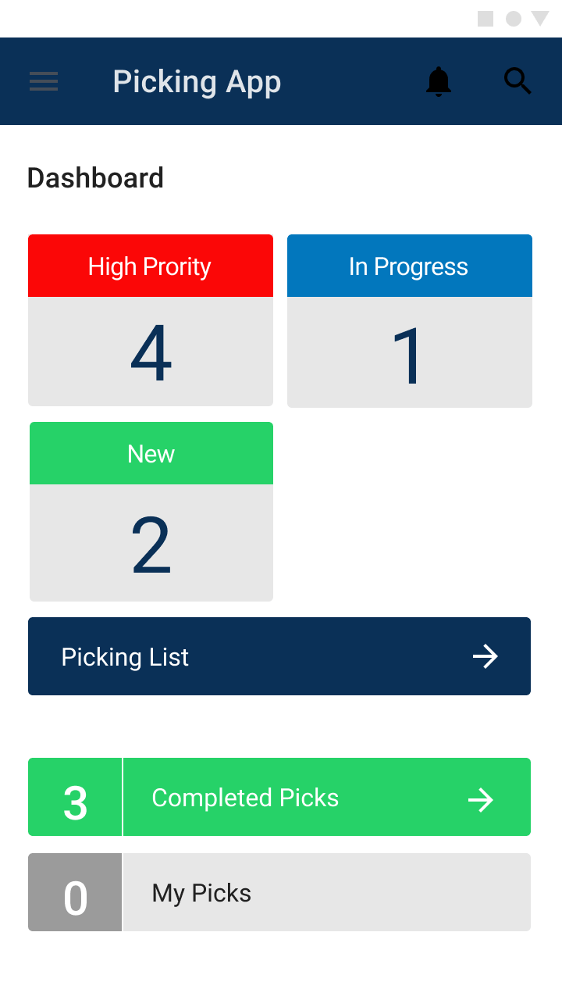
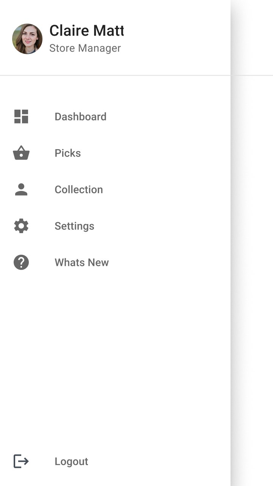
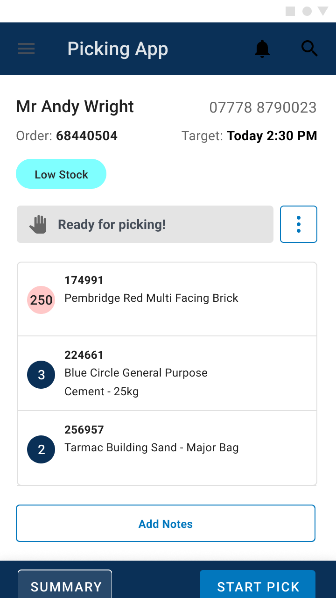
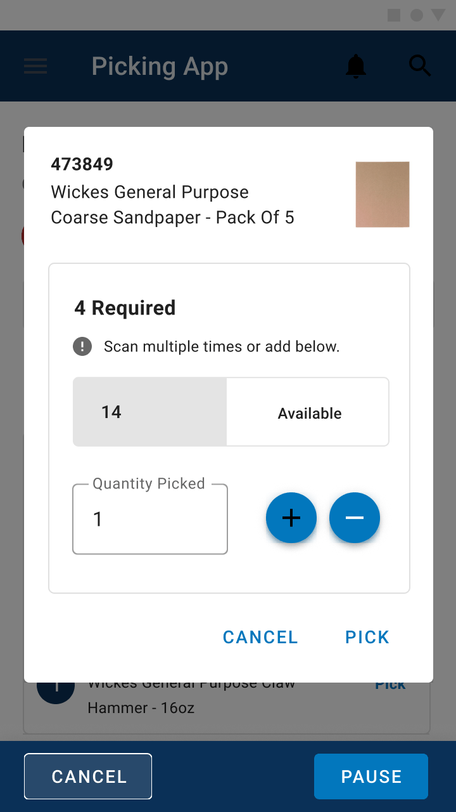
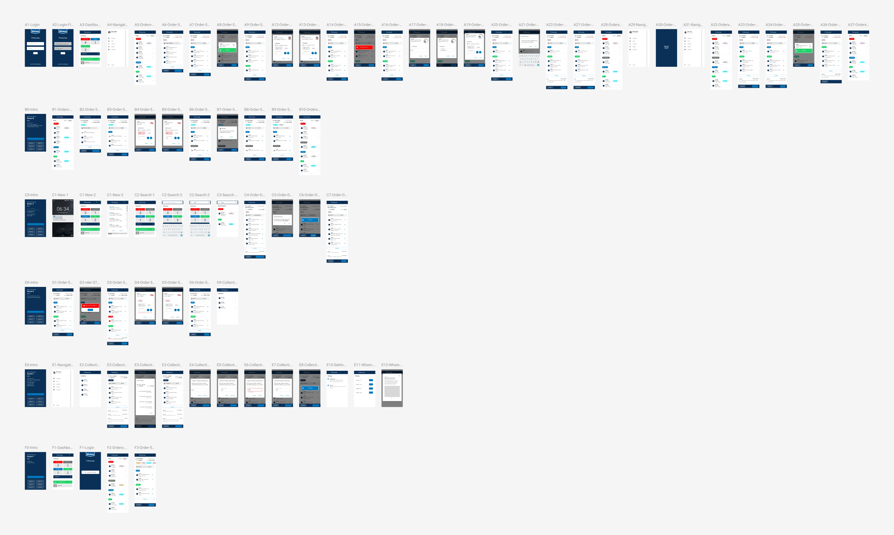
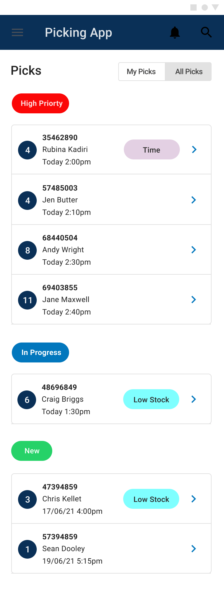
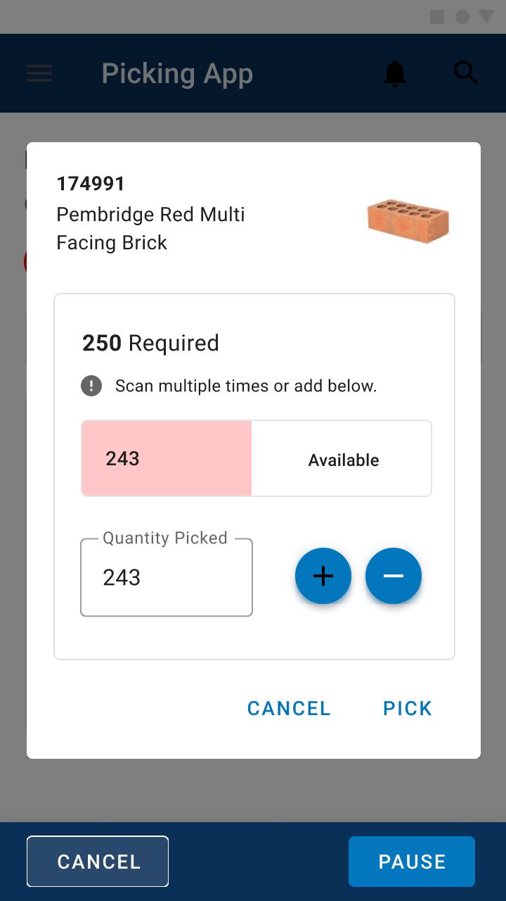
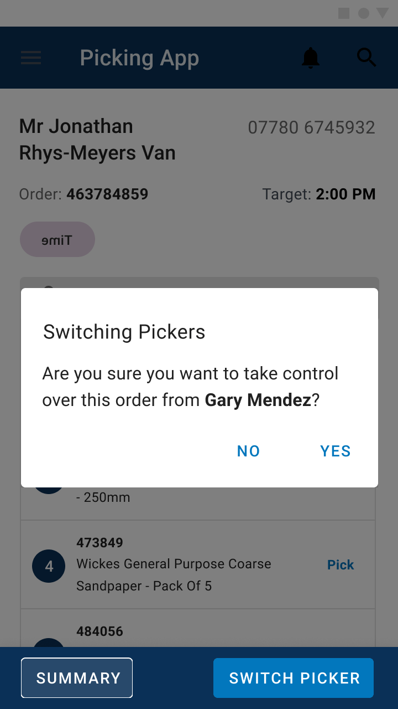

01
workload at a glance
The dashboard opens on what matters most right now: how many orders are high priority, in progress or new, with quick routes into the full picking list, completed picks and each colleague’s own picks.
case study · retail · android app
The nationwide digitisation of click and collect within Wickes stores. A prominent UK DIY retailer. Replacing printed receipts, & hand made note taking, with a robust Android app with attached external barcode scanning capabilities.

Click & collect orders were printed off as receipts, and store colleagues walked the aisles filling a basket by hand. There was no live view of which orders were urgent, who was picking what, or whether stock was on the shelf. Wickes wanted the whole process digitised on Android devices fitted with external barcode scanners. The ux and ui needed to be highly functional and simple.
During just under a year working directly with Wickes as a freelance UX Manager, I was the sole UX principle designer on this project, which ran for a couple of months. I worked alongside a product owner and stakeholders representing departments across the business, bringing their needs, limitations and expectations together into one workflow.
Paper receipts gave stores no live view of priority, progress or who was working on which order.
Every department touching click & collect had its own needs, limits and expectations, so the workflow had to work for all of them.
The hardware shaped the experience: robust industrial devices with external scanners meant designing scan-first flows for the shop floor.
The status of every new or pending order had to clear to all in-store employees. Labelling and app way-finding had to be simple and clear to avoid mistakes.
consumer behaviour · trades vs customer
We spent a lot of time understanding how stores actually work: talking to stakeholders and departments, mapping workflows, and working through the constraints of the hardware and the shop floor.
Alongside the colleague-facing app, I mapped the wider customer journey, following TradePro customers, and more general consumers from first enquiry through to collecting materials in store. The differences and behaviours of professionals and more the domestic casual customers needed to be deeply understood.
94 screens
The MVP covered upto 100 screens, from the dashboard and picking flows to search, barcode scanning, error states and handovers between colleagues. Every state was designed so developers and stakeholders could see exactly how the app should behave on the shop floor.

splash
dashboard
navigation
order ready
picking
The dashboard opens on what matters most right now: how many orders are high priority, in progress or new, with quick routes into the full picking list, completed picks and each colleague’s own picks.

On a busy shop floor, order status has to read in a second. Working within Wickes’ digital and brand guidelines, I spent a lot of time refining the colour codes for each status and tag (high priority, in progress, new, low stock, time-critical) and agreed every one with stakeholders across the business.

Picking at Wickes is rarely one item at a time. A single order might need 250 bricks when only 243 are available. The scan overlay lets colleagues scan multiple times or adjust quantities by hand, and makes shortfalls obvious before an order goes out incomplete.

Orders can change hands mid-pick, between shifts or breaks. Each order locks to the colleague picking it, and taking one over is a deliberate, confirmed step, so two people never pick the same order.
A round of testing with store colleagues on the designs.
Feedback shaped a further set of updates.
The app was built and tested in selected stores.
Rolled out to Wickes stores across the country.
Spending real time with stakeholders and departments up front, so the status colours and workflows were agreed by everyone before the app was built. Making sure everyone is aligned with the design process and challenges, was really key.
If the project engagement was longer it would been great to really explore further functionality with the app bringin it more inline with the really expansive experimental nature of my original TradePro and customer journeys.
“Really great team. It was a joy to work on this project. Communication was good, problems were solved, the product owner was exceptional in steering and navigating this rather complex project.”